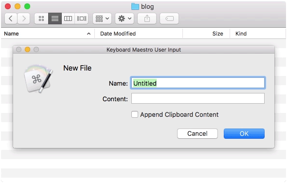

New File in the Finder
January 9 · 2017
It's possible to create a new folder in the Finder, but creating files are not supported. I've cooked up a Keyboard Maestro macro that lets you create new files at will:

If you're not familiar with Keyboard Maestro it's a tool similar to Automator, that allows you to create macros that can be triggered in a number of ways e.g. when a hot key is pressed. In this case I've mapped the "New File…" macro to ⌘⌥N.
Download the macro: New-File.kmlibrary